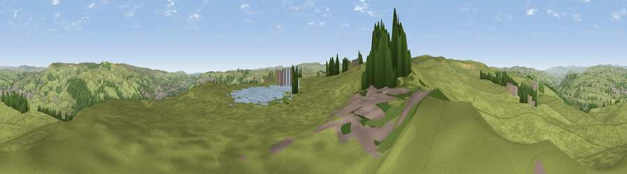

Viewpoint near Laycock
#13449 in England · top 16% of its area beats it · near LaycockWhere it is
The exact computed spot (SE 03825 42525). Click the marker for map links.
The view, rendered

A 360° render of this exact spot computed from the terrain model, tree cover and land cover — summer colours, afternoon light, calibrated against photographs of famous viewpoints. Real trees, hedges and buildings will differ in detail.
The panorama
Grey silhouette: terrain skyline in each direction (720 bearings, Earth curvature and refraction included). Dashed green: skyline with trees (+15 m) and buildings (+8 m) as obstacles. Blue strip: how far the ground is visible on each bearing.
Where the view opens
Wedge length = distance to the farthest visible ground on that bearing (vegetation-aware). Rings at 10, 25 and 50 km.
What fills the view
85% grassland · 10% woodland · 2% water · 2% built-up
Angular shares of the visible panorama (visual magnitude), not map area. Landscape diversity 0.24 (0–1 Shannon).
Key numbers
More beautiful places nearby
The staircase of upgrades: each row has a higher view potential than everything closer. Driving times are estimates from straight-line distance, calibrated against real road routing — check an actual route before setting out.
| Place | Direction | Drive | Score |
|---|---|---|---|
| Viewpoint near Laycock | ESE · 0 km | ~1 min | 59.7 |
| Pinfold Hill | NE · 3 km | ~8 min | 62.6 |
| Viewpoint near Riddlesden | ENE · 4 km | ~9 min | 67.5 |
| Viewpoint near Addingham | NE · 6 km | ~12 min | 68.9 |
| Viewpoint near Lothersdale | WNW · 10 km | ~20 min | 70.5 |
| Lad Law (Boulsworth Hill) | WSW · 13 km | ~24 min | 71.5 |
| Viewpoint near Embsay | NNW · 14 km | ~26 min | 74.5 |
| Viewpoint near Otley | E · 16 km | ~29 min | 77.5 |
53.87891, -1.94330 · source: screening · position refined by local search. Computed location — check access rights before visiting.